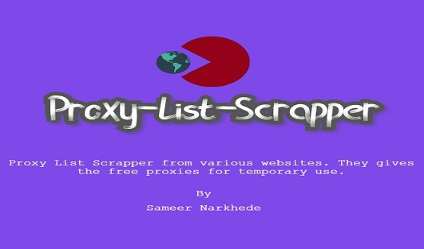

Home
Scrapper
Author

Proxy List Scrapper
Proxy List Scrapper from various websites. They gives the free proxies for temporary use.
GitHub
Proxy List Scrapper
Select an option
ALL Proxies
SSL Proxies
Google Proxies
Anonymous Proxies
UK Proxies
US Proxies
New Proxies
spys.me Free Proxies
ProxyScape Free Proxies
Scape Now
Proxy List Scrapper
Back
Proxy List Scrapper
Author